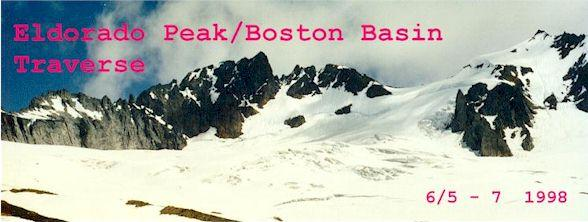
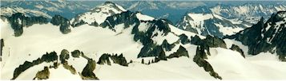
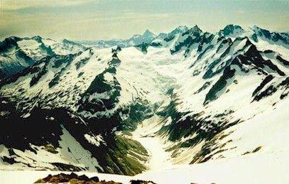
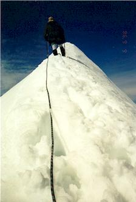
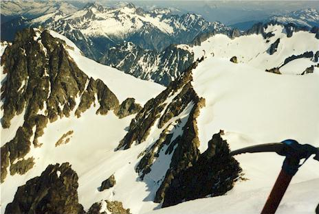
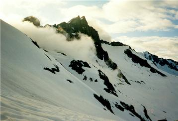
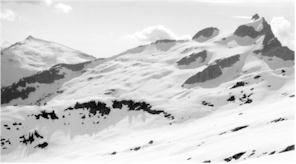
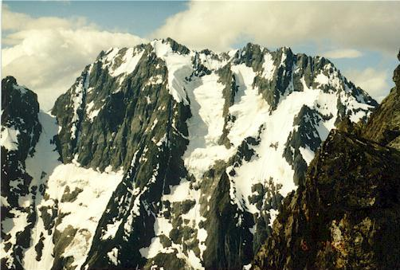
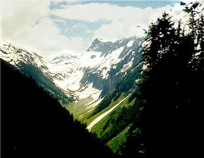
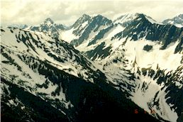

Eldorado Peak

The Eldorado summit ridge is legendary for it’s pure line of snow arching away and up from the climber. To traverse it is to embark on a transforming journey. Because of the arc it forms, you cannot see the end of it. It is a balancing act, in an icy place far removed from crowds and warmth.

Steve and I left the car at milepost 20 on the Cascade River Road. The time was 11 am and the sky was cloudy but not threatening. Surrounded by tangled brush and thorns, we crossed the Cascade River on a rotting but firm log. Talking up a storm about population growth and other sunny topics, we worked up a steep but good trail along Eldorado Creek. Deep brush gave way to open forest, then sunny boulder fields and snow patches. We could now see the incredible beauty of this legendary region. Johannesburg Mountain loomed across the valley, burdened with chunks of hanging ice. Watch it all afternoon and you’ll certainly see some of it fall. We were so amazed and happy to be there.
The boulders gave way to steep snow, which provided easier traveling with our heavy packs. We carried food and shelter for two nights, climbing rope and glacier-travel equipment. We spoke to a trio of AAI guides at a tent in the basin. They were holding a snow climbing course, and waiting for their clients to struggle up the trail.
In late afternoon, we climbed the ridge separating Eldorado and Roush basins. It began to rain during the steep descent into Roush Basin. It soon stopped, but it made us aware that we might not have another chance to set up camp and cook while dry so we stopped for the night. Steve and I were both using “bivy sacks” for the first time. A bivy is really just a roomy sack with enough room for you and your sleeping bag. It is the most austere of shelters, and we were a little apprehensive.
After a great meal of Steve’s cous-cous and dried tomatoes, we slept under a bright moon. Actually, I didn’t sleep much, but it was a wonderful night watching the clouds drift in and out. The moon swung in a broad, slow arc to the west.

The next morning, we roped up for the glaciers ahead and set off fairly late. We traveled quickly on a monotonous slope, and got our reward at the top. A large flat area offered panoramic views of the “oh my god” variety. Stunned, we moved slowly here, grinning at everything. Skiers overtook us and zoomed ahead on a challenging traverse. One of them was climbing Eldorado, and passed us once we were on the east ridge.
The climb is easy on the east ridge, simply walk up the broad ridge until the knife-edge summit is reached. There were a few open crevasses, easily avoided by sticking to the rocks on the left. We modified the route a bit, after seeing the skier (now coming down) set off a minor avalanche. Unconcerned, he sped down. We had to stay well to the left, in the shallow snow over rocks to avoid the region around his tracks. The only problem was that our exposure was greater, as we were permitted a too-clear view to the Inspiration glacier far below. The sun was becoming quite fierce, and we moved quickly, worried about worsening snow conditions.

Finally, at the summit ridge, I led carefully. At first, there
were good bucket steps, but higher up the route leaves the ridge because
it’s too thin to walk on. 4 feet down on one side, the slippery snow
had Steve and I nervous. We reached the highest point, and kicked a
secure platform out. Wow.
I allowed myself to look around again and
was amazed by the scene. In front of us was a whole panorama we
couldn’t see before, with Mt. Baker in the far distance. Behind us
we could see over to Sahale Peak and dozens of other mountains. Indeed
there were hundreds of snow-capped peaks and jagged ridges.
We lingered here in the sun for a while, then faced the worrisome task of getting down the summit ridge. Steve kicked good steps, but big chunks of snow still slid down the mountain and over a steep slope. I was glad to get off, and we began the easy work of returning to camp. We even ran downhill a ways once we could see our bivy sacks far below.
At camp we drank water and rested in the shade of umbrellas. After an
hour, we started packing, and were soon on our way back into Eldorado
Basin.
On the ridge again, we saw a dozen people learning snow anchor
technique. We zoomed into the basin and plodded for an hour with the
sun blazing down.
Finally we reached the end of Eldorado Basin, climbing up to the ridge
with Torment Basin on the other side.
Minutes of incredible
heat and lassitude, seconds of chilling wind, and occasional wake-up
calls in the form of snow collapsing under a complacent boot made
up our reality. Sometimes we stopped, and had little
to say. “It’s getting closer.” “Yeah, I know.”


This went on for some time. Near the crest of the ridge, with Steve traversing a corner, we both realized that the slope was about 35 degrees with a long fall below. Suddenly awake, and without being able to see around the corner (perhaps the slope became worse), we wished for our axes, to plant solid holds in the snow. The ski poles, while nice for balance, were out of their element in this terrain. But our axes were snugly attached to our packs, out of reach.
It felt safer to step-kick straight up the slope, as it seemed to
level off 40 feet up. We did this side by side, each kicking our
own path. We reached the ridge top with some relief, and were
utterly spent. The time was around 6 pm: almost 11 hours of
toil. Steve was set on bivying here, on this
beautiful ridge-top. We could see the AAI tents far below in
Eldorado Basin, and the “Snow Anchor Clinic” descending
from their ridge to the west. Looking east into Torment Basin we saw a steep cleft,
through which clouds from the north traveled swiftly. Mt. Torment
appeared and disappeared behind them with amazing rapidity.
It
didn’t look difficult, but we could see that we had a deep
descent to clear the cleft before climbing back up to the
Boston Basin ridge. I wanted to make the easy descent now,
and bivy in a sheltered area of the basin, but Steve’s admirable
wish for view over comfort won out. We quickly stomped out a
platform, and anchored axes at about thigh level on the sides.
We hoped this would prevent a sleepy fall into Torment Basin
for Steve who got the outside seat!
Exhausted, we slowly set up our camp, got in our sacks and began boiling water. We laughed ourselves silly with the image of a flailing, helpless climber racing down a mountain in a bivy sack, finding himself back at the car by morning.

I made dinner: Stove Top Stuffing, tuna fish and cilantro. I added too much water though, and Steve hilariously dubbed the meal “Mountain Swill.” This brought on another bout of insane laughter! Despite the porridge-like consistency, it was hot and good. But I was worried about Steve, who couldn’t eat very much. The long day had shut down his digestive system, he said, and he was afraid of vomiting. For my part, both of my pairs of socks were wet, and I was hoping we had enough fuel in the stoves to dry one pair overnight.
At this point we made plans to go back via Eldorado Creek. The route was known, it was all downhill, and without nourishment it wouldn’t be prudent for Steve to push himself the next day. Then I was glad we had bivied on the ridge. Had we gone down into Torment Basin, we would have been more committed to the traverse. When you or your partner is feeling ill, it’s good to have options.
We were both heartened when Steve did get all the “swill” down, and started feeling much better. Thusly, we went to bed tired and happy. I slept soundly for hours at a stretch, again waking up sometimes to see the new position of the moon, and to watch the rocks to my right appear and disappear in the mist. Around 4 am, a pika sat on the ridge rocks and watched us for some time. I watched him back.
Morning was leisurely, with our umbrellas serving well against strong wind from the east. I ate crumbling pop tarts, and had a difficult time putting in contacts. Finally we were packed up and ready to descend.
We plunge stepped about 800 feet down into the basin, avoiding wet rock patches. Once down as far as we needed to go, I led us up to the Boston Basin ridge. We traveled very slowly, finally getting into a pace we could maintain for long stretches. I remember this basin very kindly. The goal was in sight, the sun usually hidden, with mysterious clouds drifting through the cleft, partially obscuring Torment Peak. Within an hour, we were bright and peppy, thinking “I could climb that,” and looking up at the mountain’s flanks, scanning for lines. We reached the ridge top in good form…no panting…no stops to rest.

The view from this ridge was one of the best, with the Quien Sabe glacier ahead, Sahale Peak, and Johannesburg looming larger than ever. The snow covered hummocks and rock led the eye ever downward into the trees and green to the Cascade River far below. We ate lunch here on sunny rocks, feeling so glad that we had continued the traverse.
Steve and I were sure that Boston Basin would be easy. Just go
down to the middle of it, and find some nice tracks leading into
the trees. It turned out to be harder than that.
We ate most of our food, and drank most of the
water.
And here we met our greatest difficultly, and our only serious mistake. We had to get down from the ridge into Boston Basin on a rock band, as there was no continuous snow to make the descent easy. It must not be too bad, we told ourselves, and soon found a way traversing down on heather benches. The footing became tricky, and the soil ran out. Where there had been green and brown, was suddenly down-sloping granite covered in pebbles. We had split up, with Steve almost out of sight but at about the same elevation. After a few moves with the pack trying it’s best to throw me from the cliff, I sat down on a welcome upsloping rock, muscles straining. “Uh, Steve, I think I’ll let my pack slide to the bottom.” Steve, going through his own difficulties, said OK, but didn’t seem to think it was a good idea. I couldn’t imagine continuing though, as I had a holdless slab before me where I’d have to slide 5 feet and let my feet catch on a small ledge. So I took off the pack, and gently dropped it, expecting it to slide and be stopped by rocks a little further on.
With horror, I saw the overladen pack tumble and bounce, picking up speed with each impact. Oh my god, I thought. I felt extreme embarrassment at having done something so stupid. The pack continued onto the snow, never slowing down. When it was a black speck far below, it finally stopped just feet before a drop-off. This forced me to grimly acknowledge that now I had no rope even if I wanted one. Also, I had to get down no matter what…I wasn’t going to leave my gear. Mainly though, I realized how steep and dangerous this descent was, and beat myself up for a while. We could have rappelled from solid rock a little higher up. Or we could have lowered the packs on our rope. It didn’t look that severe though, and Steve has pointed out that we would have had at least two rappels, possibly with no good anchors for the second one. Anyway, after a few tense minutes I made it to safer ground. Steve was higher up though, and I was worried. I don’t actually know how I’d have done it with my pack, so it must have been tough.

I tromped down to my pack as Steve grimly finished the rock in good style. I felt very sorry for my ill-treated gear, and found a broken umbrella and stove platform to be the only casualties. Relieved, I traversed up to meet Steve, who had begun the hike into the basin. Here and there were tracks, but very faint. Finally we lost them, and got into dangerous territory. Occasional holes in the snow revealed rushing water just beneath. Our feet would punch through, feeling sharp rocks. Faced with a tough descent through this “minefield,” we backtracked a ways, where Steve found a safer path. In general, this basin was characterized by tedious route-finding to avoid wet rock, water and holes in the snow over same. But we also had marmots everywhere! We crossed their webbed tracks in the snow, and saw them scamper from one rock-island to the next around us.

A few hours of effort brought us to a recognizable trail, and we began descending into the trees just as the rain began. It seemed to have held off until we reached their safety! We laughed about that and continually commented on the wonderful trail. Soon, the only snow we saw was in occasional patches. It felt very strange to look on a world of brown and green. We gamely crossed 5 creeks, thinking, “this is easy!”
But alas, in the pouring rain we wandered off the trail onto a game path. We ended up in a thorny, rocky boulder field with Steve standing on a log with thorns perched all around him. “Is this really the trail?”
Fifteen minutes of puzzlement put us back on track. We covered the bad trail with branches to say “no entry” but we found out later that others had followed our fresh, muddy tracks into the briar patch anyway!
Almost down to the road, we quit commenting on the quality of the trail as it became a nightmare of steep rock and slippery mud. Gnarled roots served as handholds on the outrageous “trail.” Finally, we were on an abandoned road. Here we talked with another party who had climbed Sahale Peak. Their description made us want to go right back up and climb it, but our tired feet said otherwise!
The three miles back to the car passed very quickly. We pretended to be on a treadmill and constantly estimated our return time by our pace. The three miles went in 45 minutes, and the car had become a luxury hotel in our minds. Ahhh! A dry place to sit, some 3 day old doughnuts, civilian clothes!
Steve wins the “Mountain Hard Man” award for having a bloody foot from the pounding trek out, and baring it stoically! I’m glad to see this award getting used properly. I used to nominate myself for it just because I looked “grim and flinty-eyed” for an instant.